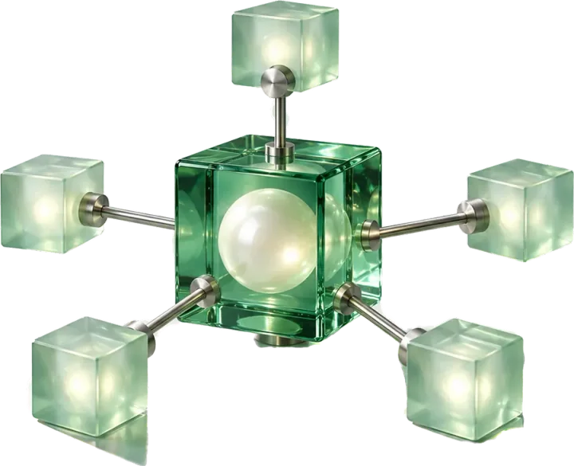

01 · Web platform · 2024
Harbor
A neighbourhood noticeboard people actually read
View case
02 · AI assistant · 2026
Northwind
An assistant that drafts the next step for you
View case
03 · Analytics · 2025
Lumen
Alert rules without a single spreadsheet

View case